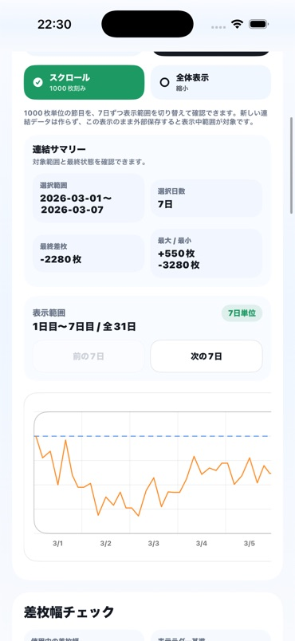
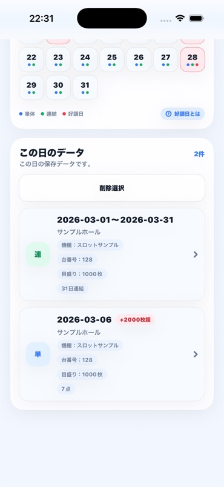
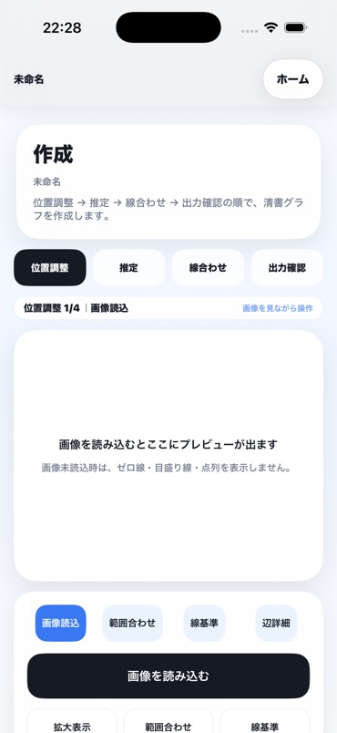
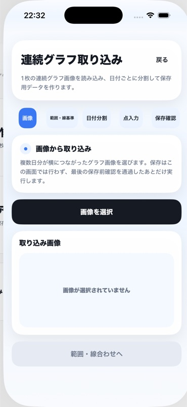
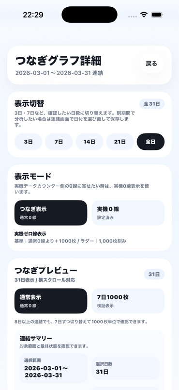
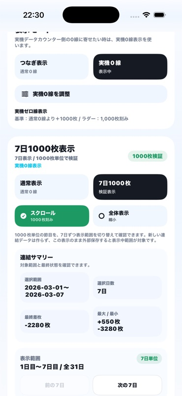
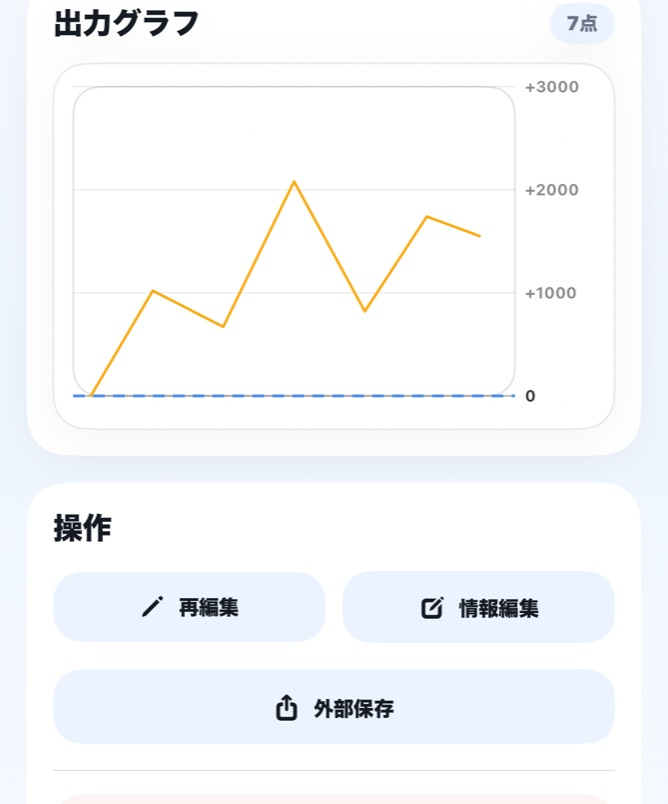

画像のみで管理
必要な記録を探しにくい
- 日付・店舗・機種があとから分からない
- 同じ台番の過去記録を探すのに時間がかかる
- 複数日分の流れを画像だけで追いにくい
Slarog by NKIS Works
画像からスランプグラフを作成し、日付・店舗・機種・台番号ごとに保存。複数日の記録を連結して、あとから振り返れます。


31日分の連結も、7日ずつ見やすく比較できます。
店舗・機種・台番号ごとの過去グラフを探しやすく残せます。
作成・保存・連結
画像を、検索・比較できる記録へ。
日付・店舗・機種・台番号ごとにグラフを整理し、同じ条件の記録を時系列で連結。保存した記録はカレンダーから確認できます。
Record Management
画像のみで管理
スラログで管理
Features
画像の読み込みから保存、検索、連結、PNG出力まで、スランプグラフの記録管理に必要な機能を提供します。

Create
ホールで撮影したスランプグラフやスクリーンショットを読み込み、表示範囲と基準線を合わせて記録できます。元画像のまま残すのではなく、あとから比較しやすい統一されたグラフとして整理できます。

Continuous Import
複数日がつながったグラフ画像は、日付ごとの区切りを指定して取り込めます。1日ずつ同じ作業を繰り返さず、連続した記録をアーカイブへ追加できます。
Archive
保存したグラフは、店舗・機種・台番号・日付ごとにアーカイブされます。最大差枚が+2000枚以上に到達した日はカレンダーで分かりやすく表示されるため、過去の動きを探す手がかりになります。
好調日は、保存された単体グラフで最大差枚が+2000枚以上に到達した日を示す目印です。設定や今後の結果を保証するものではありません。

Series
同じ店舗・機種・台番号の記録を日付順につなぎ、複数日の動きをひとつのグラフで確認できます。1日だけでは気づきにくい上昇・下降の流れを、長い期間で振り返れます。
7 Days / 1000
8日以上の連結グラフでも、新しく連結を作り直すことなく、表示する7日間を切り替えられます。期間ごとのグラフを同じ1000枚幅で表示できるため、日による動きの違いを比較しやすくなります。


Zero Line / Export
通常の0線に加え、実機の表示に合わせた0線でもグラフを確認できます。作成した単体グラフや連結グラフはPNGとして保存でき、端末内での保管や見返しにも利用できます。
Record & Review
スラログは、保存したグラフを見返し、ユーザー自身が過去の推移を確認するための記録・比較の補助ツールです。日付や条件をそろえて残すことで、あとから落ち着いて振り返れます。
勝敗、利益、設定や今後の結果を保証するものではありません。
Free Tool
無料計算ツール「スロバランス」は、登録不要でブラウザから利用できます。入力した数値は端末内で計算し、サーバーへの送信や自動保存は行いません。
スロバランスを使うNKIS Works Products
Playlist Toolkitは、Amazon Musicのプレイリスト並び替え、重複候補の確認、監査、追加候補の整理を支援する独立系Androidユーティリティです。
Playlist Toolkitを見るPlans
Android版はアプリ独自の14日間無料、iOS版はApp Storeが対象と判定した方に2週間の無料トライアルを提供します。
OS別の無料期間
初回の正常なグラフ保存から14日間、登録せずに全機能を利用できます。Google Playの無料トライアルではなく、未登録のまま料金が発生することはありません。
App Storeが対象と判定した新規登録者には、購入画面に2週間無料と表示されます。適用可否はApp Storeの購入画面で確認できます。
月額プラン
¥3801か月・自動更新
月額プランの有効期間中は、スラログの全機能を継続して利用できます。
Android版は月額プランへ登録した場合のみ課金が始まります。iOS版で無料トライアルを開始した場合は、期間終了の24時間以上前に解約しない限り月額380円で自動更新されます。解約はApp StoreまたはGoogle Playのサブスクリプション管理から行え、解約後も現在の有効期限までは利用できます。アプリを削除しただけでは解約されません。
FAQ
Android版は、初回の正常なグラフ保存が完了した日時から14日間です。iOS版は、App Storeが対象と判定した方が購入画面から登録すると2週間の無料トライアルが始まります。適用可否はApp Storeの購入画面で確認できます。
広告は表示されません。アカウント登録やサインインも必要ありません。
作成・保存・アーカイブ・連結・連続取り込み・PNG共有などの主要機能を利用できます。
iOSはApp Store、AndroidはGoogle Playのサブスクリプション管理から解約できます。解約後も現在の有効期限までは利用できます。アプリを削除しただけでは解約されません。
Android版は、月額プランへ登録しない限り料金は発生しません。iOS版は、App Storeの無料トライアルへ登録した場合、期間終了の24時間以上前に解約しない限り月額380円で自動更新されます。
保存した単体グラフで、最大差枚が+2000枚以上に到達した日を示す目印です。設定や今後の結果を保証するものではありません。
はい。iOS版とAndroid版を提供しています。
いいえ。勝敗、利益、設定、将来結果を保証・推奨する機能はありません。ユーザー自身の遊技記録を整理するためのアプリです。